| Repetition | First roll | Second roll | Third roll | Sum |
|---|---|---|---|---|
| 1 | 3 | 6 | 3 | 12 |
| 2 | 1 | 2 | 4 | 7 |
| 3 | 4 | 2 | 4 | 10 |
| 4 | 2 | 2 | 1 | 5 |
| 5 | 4 | 6 | 1 | 11 |
| 6 | 5 | 1 | 2 | 8 |
| 7 | 3 | 1 | 3 | 7 |
| 8 | 5 | 5 | 6 | 16 |
| 9 | 5 | 6 | 3 | 14 |
| 10 | 4 | 5 | 2 | 11 |
1 What is Probability?
We hear the word “probability” often. Here are just a few quotes from recent online articles which mention probability.
- Researchers say the probability of living past 110 is on the rise (CNBC, July 17, 2021)
- Forecasters now have a model that can predict the probability of rip currents up to six days out. (CNN, July 18, 2021)
- A Week of negatives increases probability of stock market correction. (Forbes, July 10, 2021)
- Less than 1% probability that Earth’s energy imbalance increase occurred naturally (Science Daily, July 28, 2021)
- Basketball Reference’s Hall of Fame probability model already has Giannis at 67.9 percent. (Bleacher Report, July 23, 2021)
- Study suggests that the rate of global warming increases the probability of extreme temperatures. (NPR, July 29, 2021)
- We anticipate an above-average probability for major hurricanes making landfall along the continental United States coastline and in the Caribbean. (Weather Channel, June 1, 2021)
- Scientists fine-tune odds of asteroid Bennu hitting Earth through 2300 with NASA probe’s help (Space.com, Sept 3, 2021)
You have some familiarity with the words “probability”, “chance”, “odds”, or “likelihood” from everyday life. But what do we really mean when talk about “probability”?
This chapter provides a brief but non-technical introduction to randomness and probability. Many of the topics introduced in this chapter will be covered in much more detail in later chapters.
1.1 Randomness
A wide variety of situations involve probability. Consider just a few examples.
- The probability that you roll doubles in a turn of a board game.
- The probability you win the next Powerball lottery if you purchase a single ticket, 4-8-15-16-42, plus the Powerball number, 23.
- The probability that a randomly selected Cal Poly student is a California resident.
- The probability that the high temperature in San Luis Obispo, CA tomorrow is above 90 degrees F.
- The probability that Hurricane Martin makes landfall in the U.S in 2028.
- The probability that the Philadelphia Eagles win the next Superbowl.
- The probability that the Republican candidate wins the 2032 U.S. Presidential Election.
- The probability that extraterrestrial life currently exists somewhere in the universe.
- The probability that Alexander Hamilton actually wrote 51 of The Federalist Papers. (The papers were published under a common pseudonym and authorship of some of the papers is disputed.)
- The probability that you ate an apple on April 17, 2019.
The subject of probability concerns random phenomena.
Definition 1.1 A phenomenon is random if there are multiple potential possibilities, and there is uncertainty about which possibility is realized. Uncertainty is understood in broad terms, and in particular does not only concern future occurrences.
Some phenomena involve physical randomness, like flipping coins, rolling dice, drawing Powerballs at random from a bin, or random digit dialing. In many other situations randomness just vaguely reflects uncertainty. We will refer to as “random” any scenario that involves a reasonable degree of uncertainty.
In this book, “random” and “uncertain” are synonyms. Unfortunately, some of the everyday meanings of “random”, like “haphazard” or “unexpected”, are contrary to what we mean by “random” in this book. For example, we would consider Steph Curry attempting a free throw to be a random phenomenon because we’re not certain if he’ll make it or miss it; but we would not consider this process to be haphazard or unexpected.
Random does not necessarily mean equally likely. In a random phenomenon, certain outcomes or events might be more or less likely than others. For example,
- About 84% of students at Cal Poly are California residents, so it’s more likely than not that a randomly selected Cal Poly student is a California resident.
- Not all NFL teams are equally likely to win the next Superbowl.
Uncertainty is not something to be feared, and randomness is often desirable. In particular, many statistical applications often employ the planned use of randomness with the goal of collecting “good” data. For example,
- Random selection involves selecting a sample of individuals at random from a population (e.g., via random digit dialing), with the goal of selecting a representative sample.
- Random assignment involves assigning individuals at random to groups (e.g., in a randomized experiment), with the goal of constructing groups that are similar in all aspects so that the effect of a treatment (like a new vaccine) can be isolated.
1.1.1 Exercises
Exercise 1.1 For each of the following, provide examples of random phenomenon that fit the description. Try to think of examples that are interesting to you personally!
- Just two possible outcomes, but they are not equally likely.
- Physically repeatable (at least in principle).
- Well defined “rules of randomness”.
- Involves subjectivity in determining probabilities.
- Involves uncertainty about the future.
- Involves uncertainty about the present or past.
- Associated with the planned use of randomness in a particular statistical study.
1.2 Interpretations of probability
The probability of an event associated with a random phenomenon is a number in the interval \([0, 1]\) measuring the event’s likelihood, degree of uncertainty, or relative plausibility. A probability can take any value in the continuous scale from 0 to 1, and can be reported either as a decimal (e.g., 0.305) or as a percent (e.g., 30.5%).
A few examples of probabilities:
- The probability that a fair coin lands on heads 5 times in 10 flips is 0.246.
- A group of people all put their names in a hat for a Secret Santa gift exchange; the probability that at least one person in the group draws their own name is 0.632.
- The probability that a randomly selected full term baby weighs more than 4000 grams at birth is 0.09.
- The probability that a magnitude 5+ earthquake occurs somewhere in the world within the next 48 hours is 0.96.
- According to FiveThirtyEight as of Nov 8, 2016, the probability that Donald Trump would win the 2016 U.S. Presidential Election was 0.286.
Throughout this book we will see many methods for computing and approximating probabilities such as these. But given the value of a probability, what does it mean? For example, what does it mean for there to be a “30% chance of rain tomorrow”? Just as there are various types of randomness, there are a few ways of interpreting probability, most notably, long run relative frequency and subjective probability.
1.2.1 Long run relative frequency
One of the oldest documented1 problems in probability is the following: If three fair six-sided dice are rolled, what is more likely—a sum of 9 or a sum of 10? Let’s try to answer this question by simply rolling dice and seeing what happens. Roll three fair six-sided dice, find the sum, and repeat; then see how often we get a sum of 9 versus a sum of 10. Table 1.1 displays the results of a few repetitions. We encourage you to try this out on your own now; of course, your results will naturally be different from ours.
A sum of 9 occurred in 0 repetitions and a sum of 10 occurred in 1 repetition. We see that a sum of 10 occurred more frequently than a sum of 9, but our results should not be very convincing. After all, we only performed 10 repetitions and your results are probably different than ours. We can get a much better picture by performing many, many repetitions. This would be a time consuming process by hand, but it’s quick and easy on a computer. We can have a computer simulate, say, one million repetitions—each repetition resulting in the sum of three rolls—to produce a table like Table 1.1 but with one million rows instead of 10, and then count how many repetitions result in each possible value of the sum. Figure 1.1 displays the results of such a computer simulation. We’ll see throughout the book how to conduct and analyze computer simulations like this; just focus on the process and results for now. A sum of 9 occurred in 115392 or 11.5% of the one million repetitions, and a sum of 10 occurred in 125026 or 12.5% of repetitions. The simulation results suggest that a sum of 10 is more likely to occur than a sum of 9, because a sum of 10 did occur more often than a sum of 9 when we rolled the dice many times. It seems reasonable to conclude that when rolling three fair six-sided dice the probability that the sum is 10 is greater than the probability that the sum is 9.
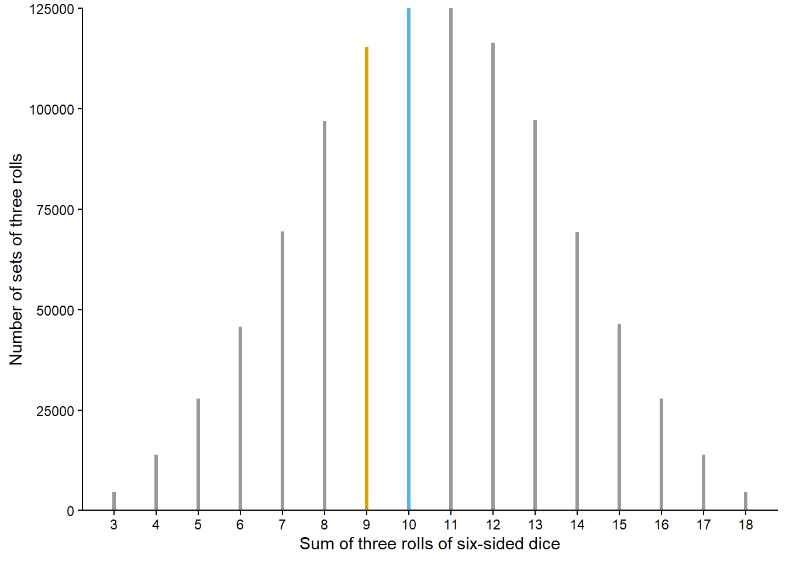
In the dice rolling problem we assessed relative likelihoods of a sum of 9 or 10 by repeating the phenomenon many times. The sum of any single set of three rolls is uncertain, but over many sets of three rolls a clear pattern of which sums occur more frequently than others emerges in Figure 1.1. This is the idea behind the relative frequency interpretation of probability. We’ll investigate this idea further in the context of the most iconic random phenomenon: coin flipping.
We might all agree2 that the probability that a single flip of a fair coin lands on heads is 1/2, a.k.a., 0.5, a.k.a, 50%. There are only two outcomes, heads (H) and tails (T), and the notion of “fairness” implies that they should be equally likely, so we have a “50/50 chance” of heads. But how else can we interpret this 50%? As in the dice rolling problem, we can consider what would happen if we flipped the coin many times. Now, if we flipped the coin twice, we wouldn’t expect to necessarily see one head and one tail. But in many flips, we might expect to see heads on something close to 50% of flips.
Let’s try this out. Table 1.2 displays the results of 10 flips of a fair coin. The first column is the flip number (first flip, second flip, and so on) and the second column is the result of the flip (H or T). The third column displays the running number of flips that result in H and the fourth column displays the running proportion of flips that result in H. For example, the first flip results in T so the running proportion of H after 1 flip is 0/1 = 0; the first two flips result in (T, H) so the running proportion of H after 2 flips is 1/2 = 0.5; the first three flips result in (T, H, H) so the running proportion of H after 3 flips is 2/3 = 0.667; and so on. Figure 1.2 plots the running proportion of H by the number of flips. We see that with just a small number of flips, the proportion of H fluctuates considerably and is not guaranteed to be close to 0.5. Of course, the results depend on the particular sequence of coin flips. We encourage you to flip a coin 10 times and compare your results.
| Flip | Result | Running count of H | Running proportion of H |
|---|---|---|---|
| 1 | T | 0 | 0.000 |
| 2 | H | 1 | 0.500 |
| 3 | H | 2 | 0.667 |
| 4 | H | 3 | 0.750 |
| 5 | T | 3 | 0.600 |
| 6 | T | 3 | 0.500 |
| 7 | T | 3 | 0.429 |
| 8 | T | 3 | 0.375 |
| 9 | T | 3 | 0.333 |
| 10 | H | 4 | 0.400 |
.
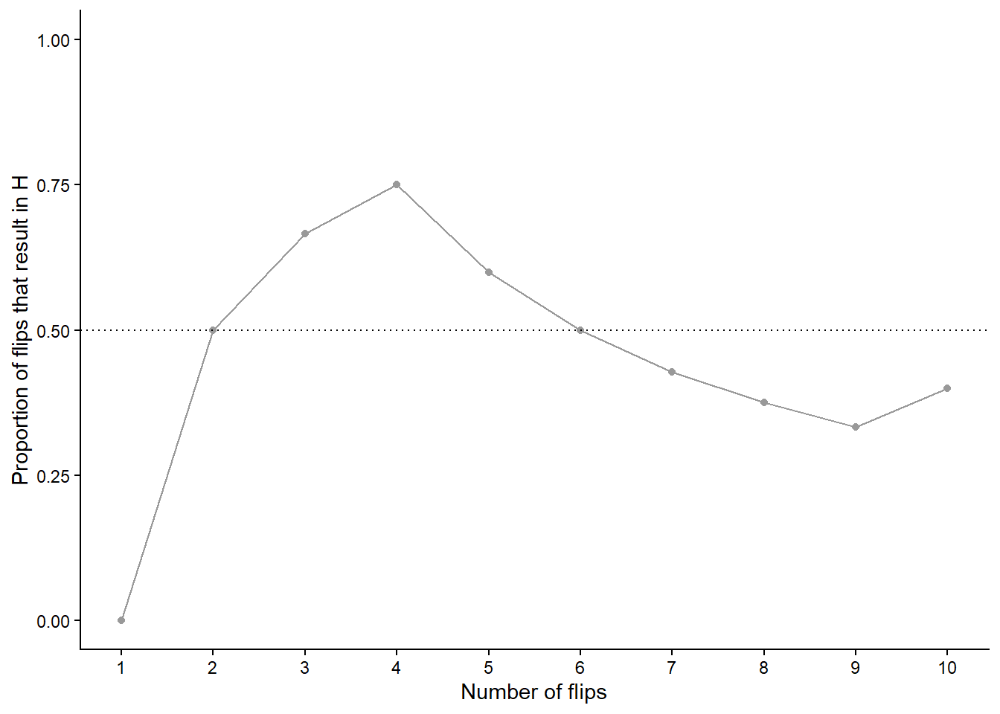
As in the dice rolling example, we shouldn’t be satisfied with the results of just 10 repetitions. Now we’ll flip the coin 90 more times for a total of 100 flips. Figure 1.3 (a) displays the results, while Figure 1.3 (b) also displays the results for 3 additional sets of 100 flips. The running proportion of H fluctuates considerably in the early stages, but settles down and tends to get closer to 0.5 as the number of flips increases. However, each of the four sets results in a different proportion of heads after 100 flips: 0.41 (gray), 0.49 (orange), 0.52 (blue), 0.53 (green). Even after 100 flips the proportion of flips that result in H isn’t guaranteed to be very close to 0.5.
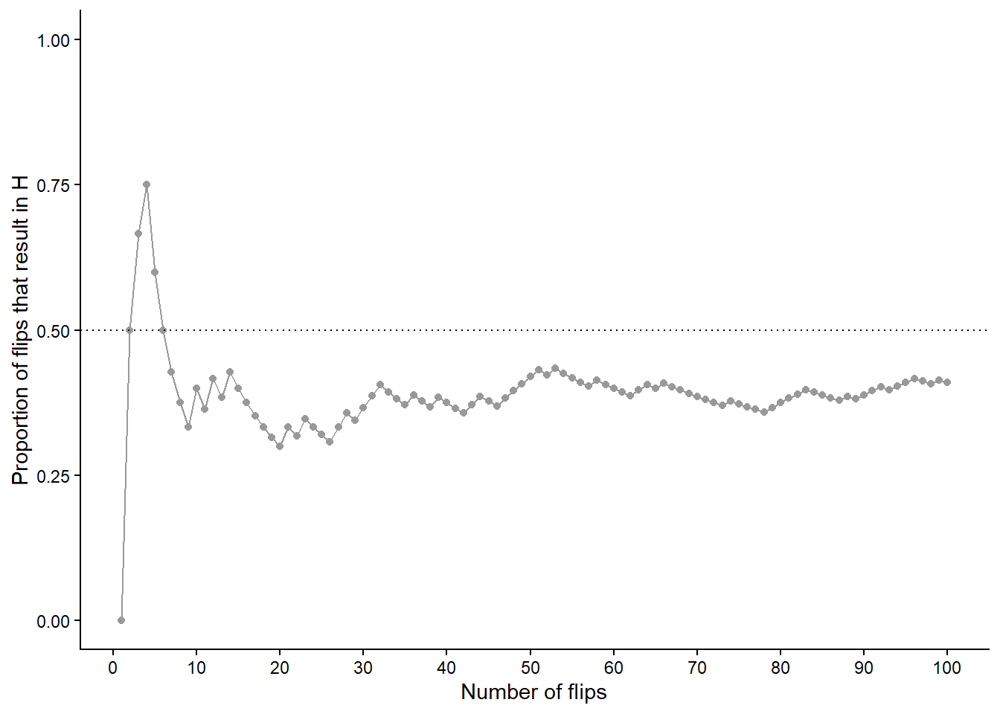
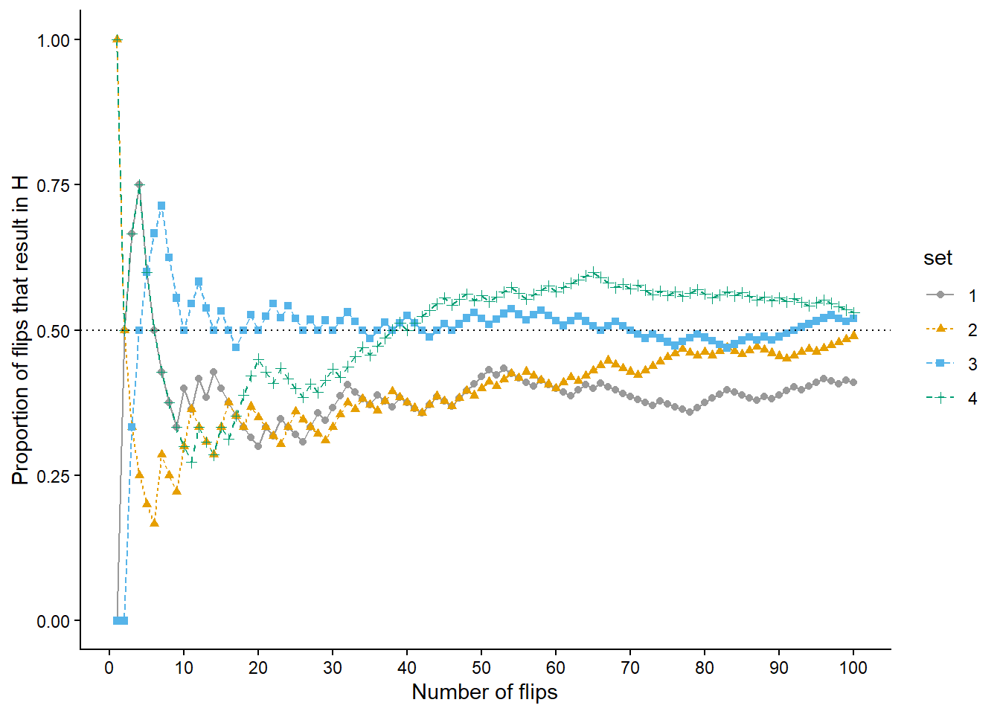
Now we’ll flip the coin 900 more times for a total of 1000 flips in each of the four sets. Figure 1.4 (a) displays the results, while Figure 1.4 (b) also displays the results for 3 additional sets of 1000 flips. Again, the running proportion fluctuates considerably in the early stages, but settles down and tends to get closer to 0.5 as the number of flips increases. Compared to the results after 100 flips, there is less variability between sets in the proportion of H after 1000 flips: 0.498 (gray), 0.485 (orange), 0.506 (blue), 0.462 (green). Now, even after 1000 flips the proportion of flips that result in H isn’t guaranteed to be exactly 0.5, but we see a tendency for the proportion to get closer to 0.5 as the number of flips increases.
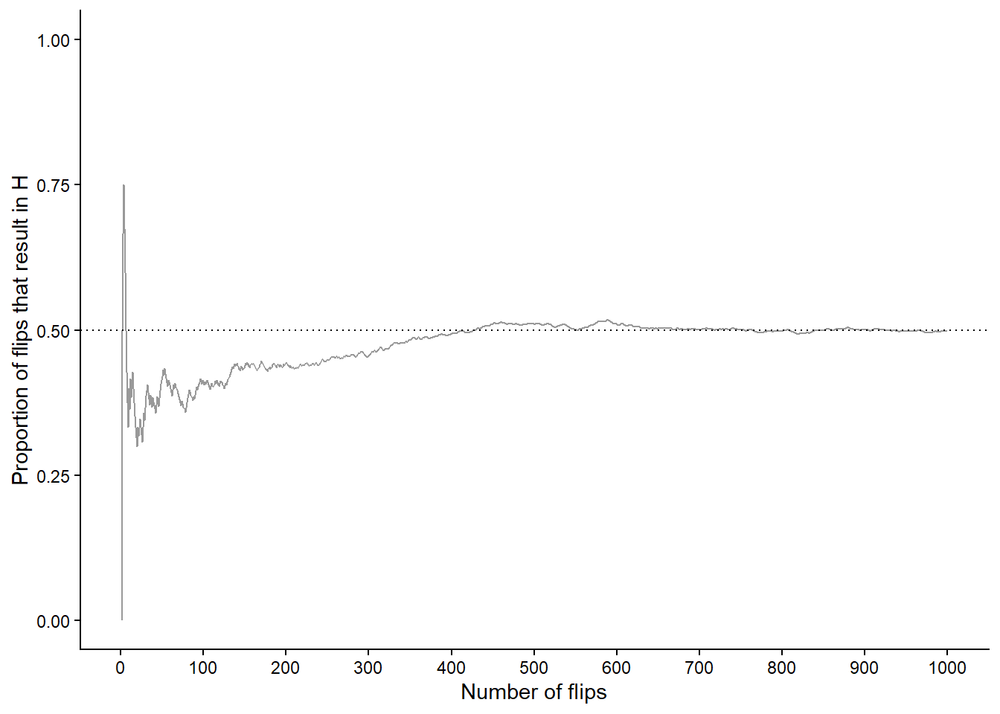
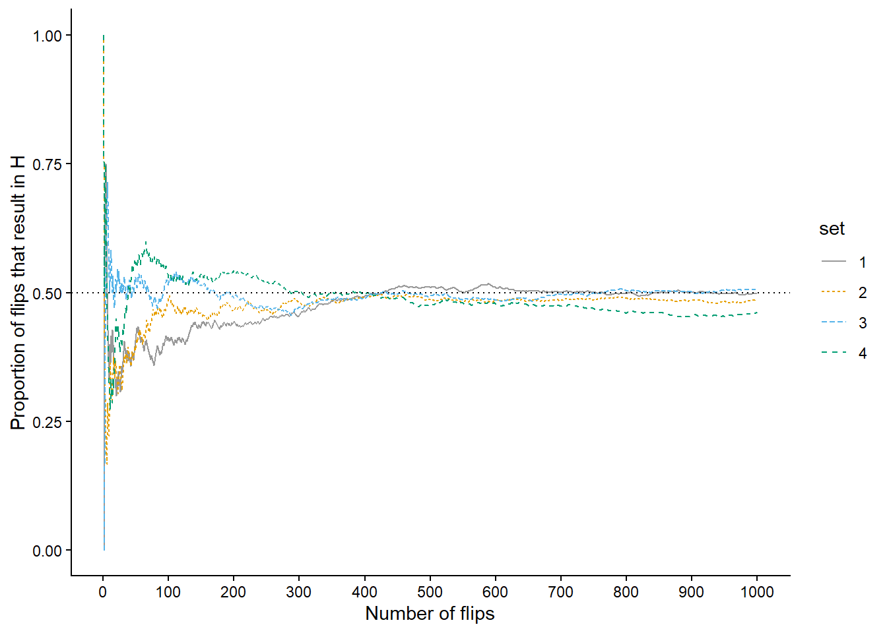
In a large number of flips of a fair coin we expect the proportion of flips which result in H to be close to 0.5, and the more flips there are the closer to 0.5 we expect the proportion to be. That is, the probability that a flip of a fair coin results in H, 0.5, can be interpreted as the long run proportion of flips that result in H, or in other words, the long run relative frequency of H.
Definition 1.2 The probability of an event associated with a random phenomenon can be interpreted as a long run proportion or long run relative frequency: the probability of the event is the proportion of repetitions on which the event would occur in a very large number of hypothetical repetitions of the random phenomenon.
The concept of long run relative frequency quantifies how often we would expect an event associated with a random phenomenon to occur if the phenomenon were repeated many, many times. The closer the probability is to 1, the more often we would expect the event to occur; the closer the probability is to 0, the less often we would expect the event to occur. Roughly, we would expect an event that has probability 0.9 to occur “90% of the time” in the long run.
Returning to rolling three fair six-sided dice, we’ll see later that the probability of a sum of 9 is 0.116 (rounded to three decimal places) and the probability of a sum of 10 is 0.125 . Even without knowing how to compute these values we can interpret them as long run relative frequencies. The probability of 0.116 means that in 11.6% of sets of three rolls of fair six-sided dice the sum is 9. The random phenomenon involves a set of 3 rolls, so we consider many sets of 3 rolls, each set resulting in a sum which is either 9 or not. If we roll three fair six-sided dice and find the sum then repeat to get many sets of 3 rolls, we would expect the proportion of sets for which the sum is 9 to be close to 0.116. Indeed this is what we observe in the simulation summarized by Figure 1.1. Likewise, in 12.5% of sets of three rolls of fair six-sided dice the sum is 10. In this sense, a sum of 10 is more likely than a sum of 9; in the long run, a greater proportion of sets of three rolls result in a sum of 10 than a sum of 9.
The relative frequency interpretation of probability is most natural in situations like coin flipping or dice rolling which we can actually physically repeat. In many contexts, the long run relative frequency interpretation, while still valid, is more conceptual and requires us to imagine many hypothetical repetitions of the random phenomenon.
A simulation involves an artificial recreation of the random phenomenon, usually using a computer. One implication of the relative frequency interpretation is that the probability of an event can be approximated by simulating the random phenomenon a large number of times and determining the proportion of simulated repetitions on which the event occurred. After many repetitions the relative frequency of the event will settle down to a single constant value, and that value is the approximately the probability of the event.
Of course, the accuracy of simulation-based approximations of probabilities depends on how well the simulation represents the actual random phenomenon. Conducting a simulation can involve many assumptions which impact the results. Simulating many flips of a fair coin is one thing; simulating the evolution of meteorological conditions over time is an entirely different story.
Be careful to distinguish between the short run and the long run. Observed relative frequencies based on past data (sometimes called “empirical probabilities”) are only short run approximations to theoretical probabilities which represent long run relative frequencies. The quality of the approximations depends on the extent to which what has happened is representative of all the possibilities that might happen.
A simulation models the long run. A natural question is: “how many simulated repetitions are required to represent the long run?” We’ll investigate further later. For now we’ll just provide a very rough benchmark: we can generally expect the relative frequency based on 10000 independent repetitions to be within 0.01 of the corresponding probability.
Finally, recall that contrary to colloquial uses of the word, random does not mean haphazard. Individual outcomes of a random phenomenon are uncertain, but the long run relative frequency interpretation implies a predictable pattern over a large number of (usually hypothetical) repetitions. For example, Figure 1.1 displays a clear distribution of the sum of the rolls of three fair six-sided dice after one million repetitions of the phenomenon. We don’t know what the sum will be when we roll the dice, but we can say that it’s equally likely to be 10 or 11, more likely to be 10 than 9, more likely to be 9 than 8, and so on. Also, we know that if we roll the dice many times, close to 12.5% of sets of three rolls will result in a sum of 10.
1.2.2 Subjective probability
The long run relative frequency interpretation is most natural in repeatable situations like flipping coins, rolling dice, drawing Powerballs, or randomly selecting U.S. adults (e.g., via random digit dialing). In many other situations, it is difficult to conceptualize the long run. The next Superbowl will only be played once, the 2032 U.S. Presidential Election will only be conducted once (we hope), and there was only one April 17, 2019 on which you either did or did not eat an apple. While these situations are not naturally repeatable they still involve randomness (uncertainty) and it is still reasonable to assign probabilities. At this point in time we might think that the Philadelphia Eagles are more likely than the Cleveland Browns to win the next Superbowl and that a current U.S. Senator is more likely than Dwayne Johnson to win the U.S. 2032 Presidential Election. If you’ve always been an apple-a-day person, you might think there’s a good chance you ate one on April 17, 2019; if you’re allergic to apples, your probability might be close to 0. Even when an uncertain phenomenon is not naturally repeated, it is still reasonable to quantify the relative degree of likelihood or plausibility of related events.
However, the meaning of probability does seem different in physically repeatable situations like coin flips than in single occurrences like the next Superbowl. Let’s switch sports and consider the World Series of Major League Baseball. Consider the 2022 World Series, which the Houston Astros won. As of June 17, 2022,
- According to FiveThirtyEight, the Los Angeles Dodgers had a 20% chance of winning the 2022 World Series, and the San Diego Padres had an 8% chance.
- According to FanGraphs, the Dodgers had a 12.4% chance of winning the 2022 World Series, and the Padres had a 9.9% chance.
- According to gambling site Odds Shark, the Dodgers had a 20% chance of winning the 2022 World Series, and the Padres had a 7.7% chance.
Each source, as well as many others, assigned different probabilities to the Dodgers or Padres winning. Which source, if any, was “correct”?
For a fair coin flip, we could perform a simulation to verify that the probability that it lands on H is 0.5. Our simulation results would vary, but with enough repetitions we could all agree that the proportion of flips that land on H seems to be converging to 0.5. We could also agree on how to conduct the simulation: each repetition involves a fair coin flip. If we’re concerned about a particular coin being weighted or biased we can simulate the fair coin flip in some other way, such as writing H and T on two cards, shuffling well, and drawing a card. There is no ambiguity about the assumptions—two equally likely outcomes—and in the long run we would reach the same conclusion. That is, we can agree on the “rules” of a fair coin flip, and these rules determine a single value, 0.5, for the probability that it lands on H.
Now consider a future World Series, say 2030. Even though the actual 2030 World Series will only happen once, we could still perform a simulation involving hypothetical repetitions. However, simulating the World Series involves first simulating the 2030 season to determine the playoff match ups, then simulating the playoffs to see which teams make the World Series, then simulating the World Series match up itself. And simulating the 2030 season involves simulating all the individual games. Even just simulating a single game involves many assumptions; differences in opinions with regards to these assumptions can lead to different probabilities. For example, on June 17, 2022, according to FiveThirtyEight the Dodgers had a 68% chance of beating the Cleveland Guardians in their game that day, but according to FanGraphs it was 66%. Even if the differences in probabilities between sources is small, many small differences over the course of the season could result in large differences in predictions for the World Series champion. (We’re not even considering uncertainty due to any changes in the rules of baseball, MLB, or the world between now and 2030.)
Unlike physically repeatable situations such as flipping a coin, there is no single set of “rules” for conducting a simulation of a single baseball game between two teams, let alone a whole season of games or the World Series champion. Therefore, there is no single long run relative frequency that determines the probability that a certain team wins the World Series. Instead we consider subjective probability.
Definition 1.3 A subjective probability (a.k.a. personal probability) of an event associated with a random phenomenon is a number in [0, 1] representing the degree of likelihood, certainty, or plausibility a given individual assigns to the event.
As the name suggests, different individuals (or probabilistic models) might have different subjective probabilities for the same event. In contrast, in the long run relative frequency interpretation the probability of an event is agreed to be the single number that its long run relative frequency converges to.
Think of subjective probabilities as measuring relative degrees of likelihood, uncertainty, or plausibility rather than long run relative frequencies. For example, in the FiveThirtyEight forecast, the Dodgers were about 2.5 times more likely to win the 2022 World Series than the Padres (\(2.5 = 0.20 / 0.08\)). Relative likelihoods can also be compared across different forecasts or scenarios. For example, FiveThirtyEight assessed that the Dodgers were about 1.6 (\(1.6 = 0.20 / 0.124\)) times more likely to win the World Series than FanGraphs did. Also, FiveThirtyEight believed that the likelihood that a fair coin lands on H is about 2.5 (\(2.5 = 0.5 / 0.2\)) times larger than the likelihood that the Dodgers would win the 2022 World Series.
The chance of rain in your city tomorrow and FiveThirtyEight’s MLB predictions are outputs of probabilistic forecasts. A probabilistic forecast combines observed data and statistical or mathematical models to make predictions. Rather than providing a single prediction such as “it will rain tomorrow” or “the Los Angeles Dodgers will win the 2022 World Series”, probabilistic forecasts provide a range of scenarios and their relative likelihoods. Such forecasts are subjective in nature, relying upon the data used and assumptions of the model. Changing the data or assumptions can result in different forecasts and probabilities. In particular, probabilistic forecasts are usually revised over time as more information becomes available.
Subjective probabilities can be calibrated by weighing the relative favorability of different bets3, as in the following example.
Warning: Using `size` aesthetic for lines was deprecated in ggplot2 3.4.0.
ℹ Please use `linewidth` instead.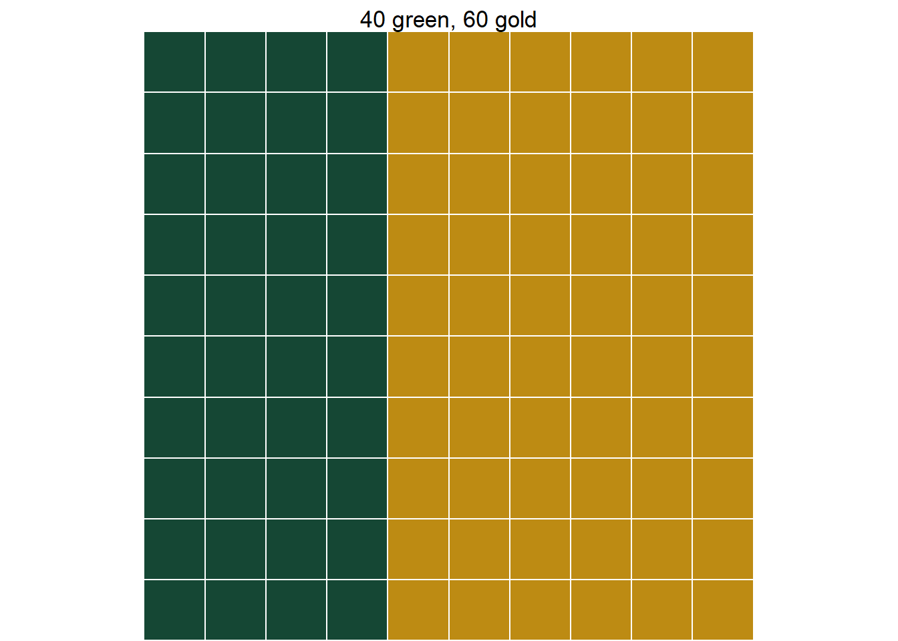
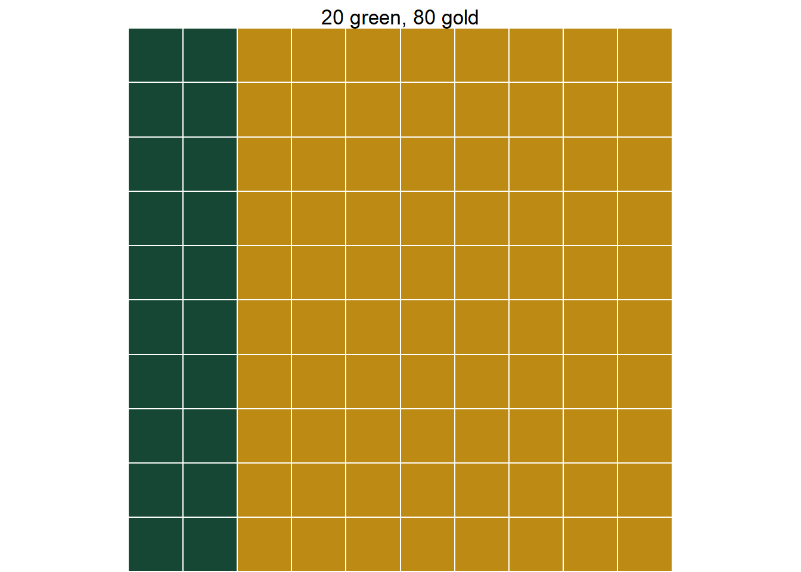
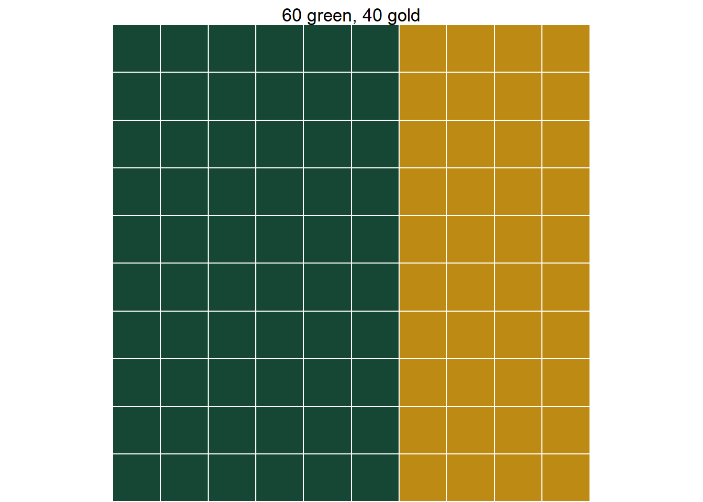
Of course, the strategy in the above example isn’t an exact science, and there is a lot of behavioral psychology behind how people make choices in situations like this4, especially when betting with real money. But the example provides a very rough idea of how you might discern a subjective probability of an event. The example also illustrates that probabilities can be “personal”; your information or assumptions will influence your assessment of the likelihood.
We close this section with some brief comments about subjectivity. Subjectivity is not bad; “subjective” is not a “dirty” word. Any probability model involves some subjectivity, even when probabilities can be interpreted naturally as long run relative frequencies. For example, assuming a die is fair does not codify an objective truth about the die. Instead, “fairness” reflects a reasonable and tractable mathematical model. In the real world, any “fair” six-sided die has small physical imperfections that cause the six faces to have different probabilities. However, the differences are usually small enough to be ignored for most practical purposes. Assuming that the probability that the die lands on each side is 1/6 is much more tractable than assuming the probability of a 1 is 0.1666666668, the probability of a 2 is 0.1666666665, etc. (Furthermore, measuring the probability of each side so precisely would be extremely difficult.) But assuming that the probability that the die lands on each side is 1/6 is also subjective. We might agree more easily on the probability that a six-sided die lands on 1 than on the probability that the Philadelphia Phillies win the 2030 World Series. But the fact that there can be many reasonable probability models for a situation like the 2030 World Series does not make the corresponding subjective probabilities any less valid than long run relative frequencies.
1.2.3 Which interpretation to use?
In short, both! Fortunately, the mathematics of probability works the same way regardless of the interpretation. We can—and will—use the long run relative frequency and subjective interpretations interchangeably. When we introduce a new concept or problem we will employ whichever interpretation we think helps us best understand the concept or solve the problem.
Long run relative frequency and subjective are not the only interpretations of probability. However, we will not delve further into the philosophy of probability5. You might still have questions such as:
- If we flip a coin and cover it before observing what side it lands on, is the flip still random?
- If we measure precisely all the features that determine the coin’s trajectory and what side it will land on (initial velocity, air resistance, etc.), is the flip still random?
- Is the probability of heads in the previous two cases 0.5? Or 0 or 1? Does it even make sense to talk about the probability of heads if the outcome is determined?
- What really is “true randomness”?
You can debate questions like these with your friends, but our position is that probability is applicable in any situation involving a reasonable degree of uncertainty. If you flip the coin but cover it, the uncertainty of the flip is not resolved so it still makes sense (to us) to say the probability that heads is facing up is 0.5. In practical situations you’re rarely, if ever, going to measure precisely all the features that determine the outcome, so you can still use probability to assess the degree of plausibility of various events. We are certainly ignoring some philosophical issues or questions6, but our brief introduction to instances of randomness and interpretations of probability provides sufficient background for discussing many interesting practical problems in a wide variety of applications.
1.2.4 Exercises
Exercise 1.2 In each of the following, write a clearly worded sentence interpreting the numerical value of the probability as a long run relative frequency in context. (Just take the numerical values as given for now. We’ll see how to compute probabilities like these later.)
- The probability of rolling doubles when you roll two fair six-sided dice is 1/6.
- The probability of rolling doubles on three consecutive rolls of two fair six-sided dice is 0.00463.
- The probability that the sum of 100 rolls of a fair six-sided die is less than 370 is 0.12.
- Roll a fair six-sided die until you roll a 6 three times and then stop. The probability that you roll the die at least 10 times is 0.822.
- The probability that a randomly selected U.S. adult uses TikTok is 0.2.
Exercise 1.3 Various sources posted odds for who would win the 2024 U.S. Presidential Election. As of June 30, 2023, the website bonus.com listed the following probabilities. (They also assigned probabilities to other candidates that aren’t included here.)
| Potential candidate | Probability of winning 2024 election |
|---|---|
| Joe Biden | 44% |
| Donald Trump | 29% |
| Ron DeSantis | 19% |
| Gavin Newsom | 11% |
| Kamala Harris | 5% |
- According to bonus.com as of June 30, 2023, how many times more likely was Joe Biden to win than Gavin Newsom?
- How many times more likely was Ron DeSantis to not win than to win?
- Another source listed the probability for Kamala Harris as 10%. How many times more likely was Kamala Harris to win according to this source relative to bonus.com?
- Say it’s October 2032 and we’re trying to predict the outcome of the 2032 U.S. Presidential election. How would a table of probabilities one month before the election compare to a table one year before the election? We obviously can’t predict the future, but in general terms what would you expect? (Hint: the bonus.com predictions were made over a year in advance of the 2024 election, and we see five candidates with not-so-small probabilities. Would you expect that to be true a month before the election?)
Exercise 1.4 Identify your subjective probability of each of the following (to the nearest 0.05 or 0.1 is fine). Explain how you arrived at your value by considering bets like those in Example 1.6.
- The probability that your favorite sports team will win a championship in the next ten years.
- The probability that you will eventually visit all 50 current U.S. states at some time in your life.
- The probability that there will be more than 50 U.S. states in 2050.
- The probability that we live in a multiverse.
- Choose a situation of interest to you and identify your subjective probability!
1.3 Working with probabilities
In the previous section we encountered two interpretations of probability: long run relative frequency and subjective. Fortunately, the mathematics of probability work the same way regardless of the interpretation.
1.3.1 Consistency requirements
Any probability assessment must satisfy some basic logical consistency requirements. Roughly, probabilities cannot be negative and the sum of probabilities over all possibilities must be 1 (or 100%). We will formalize these requirements in mathematical formulas later. For now, we just proceed using intuition.
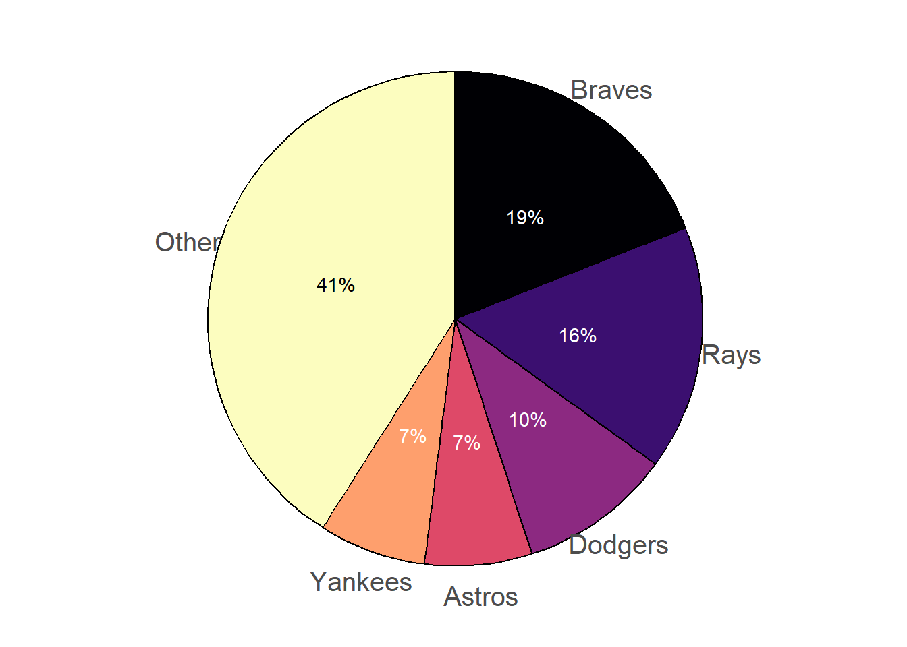
Consistency does not tell us how to assign probabilities to events. Rather, consistency requires that however we assign probabilities they must fit together in a logically coherent way. In the previous example, there is no rule that says the probability that the Braves win must be 0.19; this value is subjective. However, once we have specified that the probability is 0.19, consistency requires that the probability that the Braves do not win must be 0.81.
Example 1.8 illustrates one way of formulating probabilities. We start by specifying probabilities in relative terms, and then “normalize” these probabilities so that they add up to 1 (or 100%) while maintaining the ratios. As in the example, it helps to consider one outcome as a “baseline” and to specify all likelihoods relative to the baseline.
Figure 1.7 provides a visual representation of Example 1.8. The ratios provided in the problem setup are enough to draw the shape of the plot, represented by Figure 1.7 (a) without a scale on the vertical axis. The heights are equal for the Astros and the Dodgers, the height for the Rays is 1.5 times the height for the Astros, the height for the Braves is 2 times the height for the Rays, and if we stacked the bars for the Braves, Rays, Astros, and Dodgers on top of another another they would be as tall as the Other bar. Figure 1.7 (b) simply adds a (vertical) probability axis to ensure the heights of the bars sum to 1. Figure 1.7 (b) represents the “normalization” step, but it does not affect the shape of the plot or the relative heights of the bars.
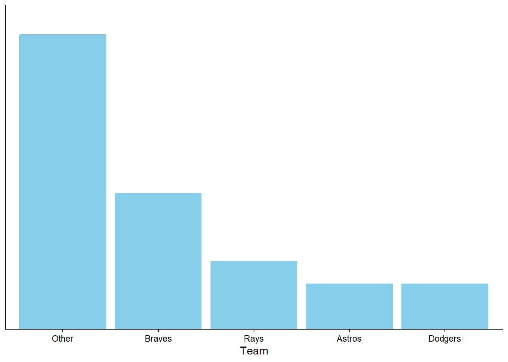
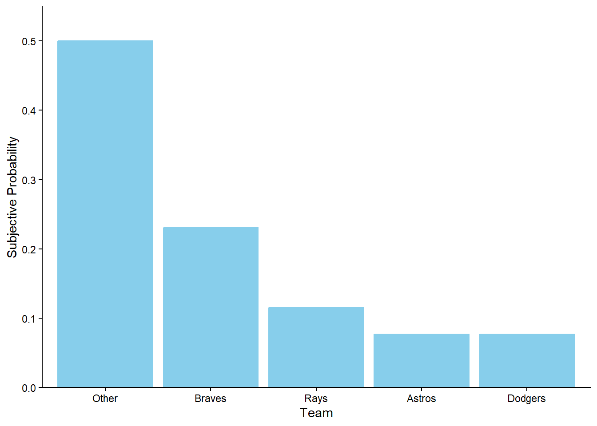
The fact that the probabilities must sum to 1 over all possibilities might seem obvious. Other consistency requirements are more subtle.
The previous example illustrates that our psychological judgment is often inconsistent with the mathematical logic of probabilities, so be careful when interpreting probabilities!
1.3.2 Odds
The words “probability”, “chance”, “likelihood”, and “odds” are colloquially treated as synonyms. However, in the mathematical language of probability, odds provide a different way of reporting a probability. Rather than reporting probability on a 0 to 1 (or 0% to 100%) scale, odds report probabilities in terms of ratios.
Definition 1.4 The odds of an event is a ratio involving the probability that the event occurs and the probability that the event does not occur. Odds can be expressed as either “in favor” of or “against” the event occurring, depending on the order of the ratio.
\[ \begin{aligned} \text{odds in favor of an event} & = \frac{\text{probability that the event occurs}}{\text{probability that the event does not occur}} \\ & \\ \text{odds against an event} & = \frac{\text{probability that the event does not occur}}{\text{probability that the event occurs}}\end{aligned} \]
In many situations odds are typically reported as odds against. While the odds of an event is a just a single number, odds are often reported as a ratio of whole numbers, e.g., 11 to 1, 7 to 2.
As discussed at the end of Section Section 1.2.2 bets can be used to discern probabilities or odds.
The previous example illustrates that the odds of a fair bet on whether or not an event will occur, determined by the ratio of the payouts, imply a probability for the event.
\[\begin{align*} \text{probability that event occurs} & = \frac{\text{odds in favor of the event}}{1+\text{odds in favor of the event}}\\ & \\ & = \frac{1}{1+\text{odds against the event}} \end{align*}\]
We have defined odds as a ratio of probabilities; these are sometimes called “fractional odds”. But odds can be reported in other ways. In particular, “moneyline odds” (a.k.a., “American odds”) are expressed in terms of the net profit on a 100 dollar bet12. For example, in Example 1.7 the moneyline odds for the Dodgers are +900. This means that someone who bets 100 dollars on the Dodgers to win the World Series would receive 100+900 dollars if the Dodgers actually win, for a net profit of +900 dollars after subtracting the initial stake of 100 dollars. A $100 bet at +900 moneyline odds results in a profit of $900 if the bet is won or a loss of the initial $100 stake otherwise; the amounts 900 and 100 are in a 9 to 1 ratio (against winning), implying a probability of \(1/(1+9) = 0.10\) of winning the bet.
1.3.3 Why do we need consistency?
Regardless of the interpretation probabilities must follow basic logical consistency requirements. If these requirements are mistakenly not satisfied, bad things can happen.
The situation in Example 1.12 is known as a “Dutch book”. A Dutch book14 is a set of probabilities and bets which guarantees a profit, regardless of the outcome of the gamble. Probabilities that fail to satisfy logical consistency requirements allow for the possibility of Dutch books. The fact that no one should ever want to get caught in a Dutch book, like Donny was in the previous problem, is one justification of why even probabilities should satisfy logical consistency requirements.
1.3.4 Exercises
Exercise 1.5 Various sources posted odds for who would win the 2024 U.S. Presidential Election. As of June 30, 2023, the website bonus.com listed the following probabilities.
| Potential candidate | Probability of winning 2024 election |
|---|---|
| Joe Biden | 44% |
| Donald Trump | 29% |
| Ron DeSantis | 19% |
| Gavin Newsom | 11% |
| Kamala Harris | 5% |
- According to bonus.com, what is the probability that either Donald Trump or Ron DeSantis wins the 2024 election?
- According to bonus.com, what is the probability that a candidate other than these five wins the 2024 election?
- According to bonus.com, is the probability that Joe Biden wins the Democratic nomination greater than, less than, or equal to 44%? Why?
- According to bonus.com, what are the odds against Kamala Harris wining the 2024 election?
- Suppose that a source gives Dwayne Johnson 500 to 1 odds of winning. What is the probability that Dwayne Johnson wins?
Exercise 1.6 Suppose that at some point your subjective probabilities for who would win the 2024 U.S. Presidential Election satisfied the following.
- Joe Biden is 5 times more likely to win than Kamala Harris, and no other Democratic candidate has a chance of winning
- The Democratic candidate and the Republican candidate are equally likely to be the winner
- Donald Trump is twice as likely to win as any other Republican candidate.
Create a table of your subjective probabilities.
1.4 Probabilities, proportions, and percentages
It is helpful to think of probabilities as proportions—fractions or decimals—or percentages. When dealing with percentages (or proportions or probabilities) be sure to ask “percent of what?” Thinking in fraction terms, be careful to identify the correct reference group which corresponds to the denominator.
When working with multiple percentages (or proportions or probabilities), it is helpful to construct hypothetical tables of counts.
Two-way tables (a.k.a., contingency tables) of counts are a useful tool for probability problems dealing with two “dimensions” (like political party and free tuition support). For the purposes of constructing the table and computing related probabilities, any value can be used for the hypothetical17 total count18.
Figure 1.8 provides a visual representation of Example 1.14. The mosaic plot in Figure 1.8 (a) has three bars, each representing a political party. The widths of the bars are scaled based on the proportions of Americans within each party. The breaks within each bar are scaled based on the proportions who do and do not support free tuition within the party. The mosaic plot in Figure 1.8 (b) has the roles of the dimensions reversed, and displays how party affiliation varies based on support for free tuition or not.
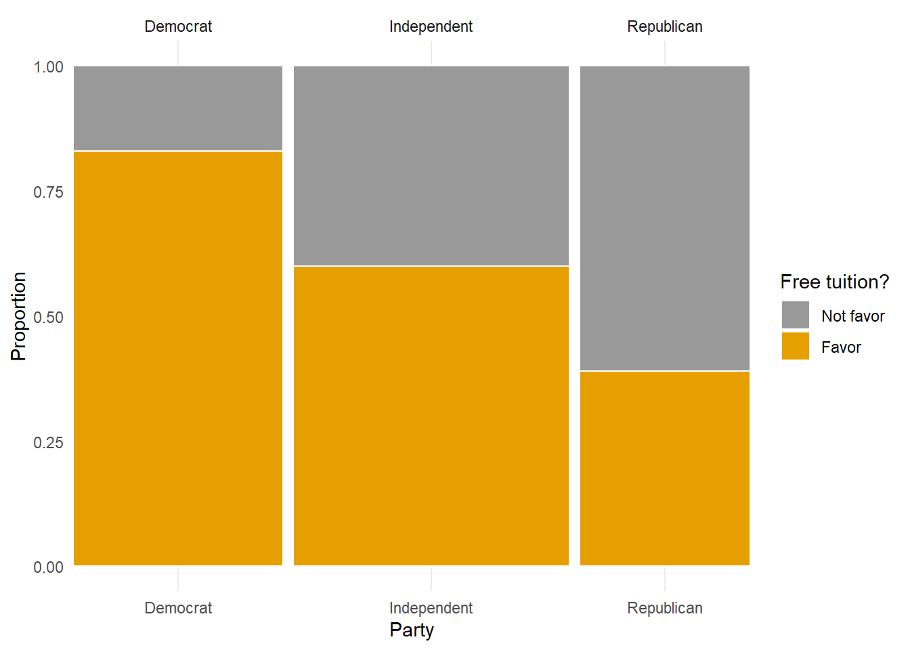
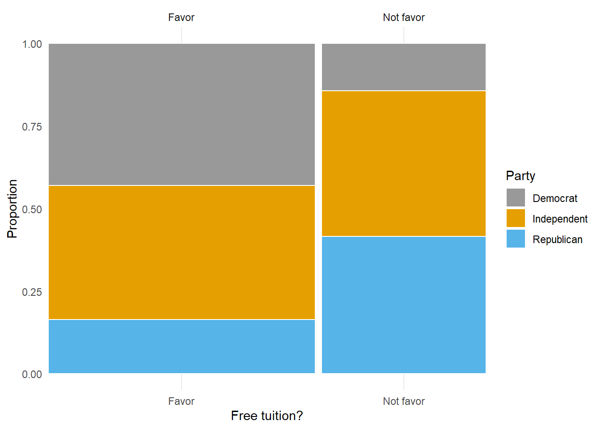
In Example 1.14, we needed information about support for free tuition within in each party to fill in the table. That is, it was not enough to know that 61.9% of Americans overall support free tuition. In general, knowing probabilities of individual events alone is not enough to determine probabilities of combinations of them.
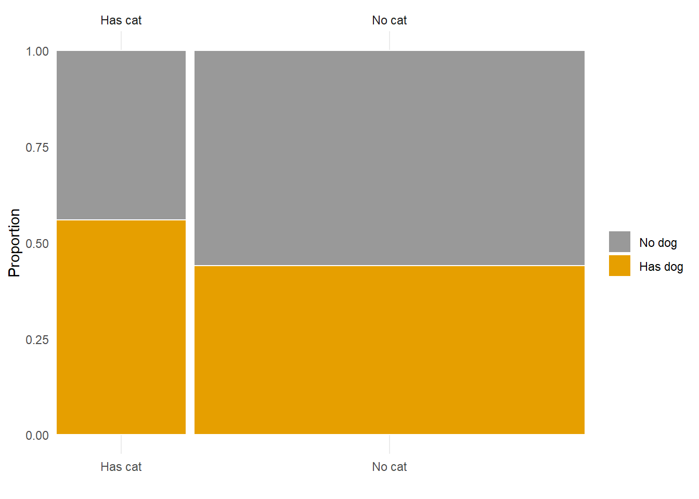
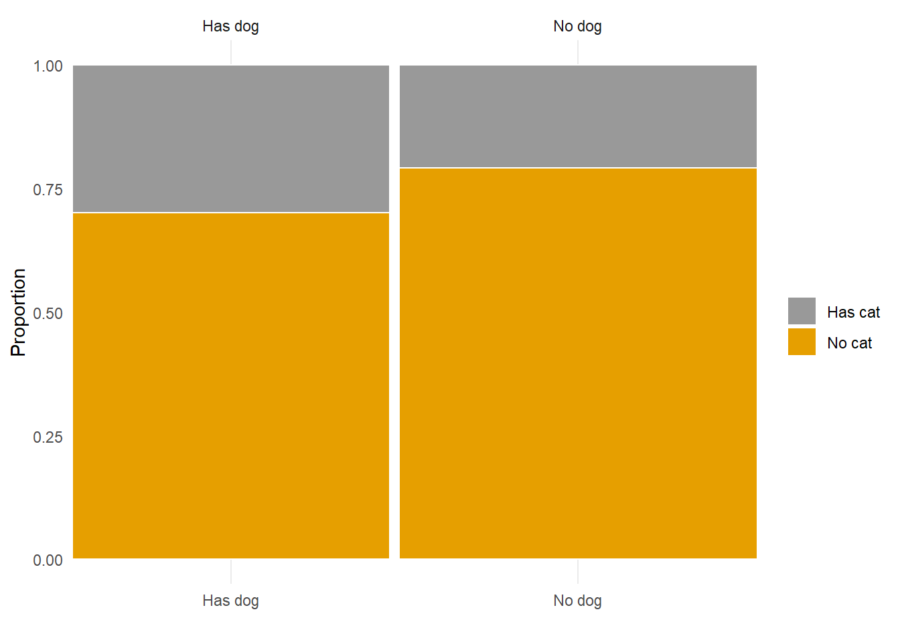
We can treat probabilities like proportions or percentages, so what’s the difference? Remember that probabilities measure likelihoods of events corresponding to random (uncertain) phenomena. The probability of an event can be interpreted as a long run proportion. For example, if we randomly select an American adult what is the probability that they have a pet dog? We can imagine repeatedly selecting American adults; if 47% of American adults have a pet dog, then the proportion of randomly selected adults that have a pet dog will converge to 0.47 in the long run. A probability represents a theoretical long run value. A proportion or percentage typically represents an observed short run value. In Example 1.15, we assumed 47%, 25%, and 14% applied to all American adults, but the values actually come from a random sample of just hundreds of American adult respondents.
In Example 1.13, switching the places of the words “greater than six feet tall” and “play in the NBA” resulted in two very different percentages. Without going into a grammar lesson, pay careful attention to how probabilities (or proportions or percentages) are worded. Think carefully about what the ordering of the words represents, and look out for words like “if” or “given” which signify information that influences probabilities.
Remember to ask “percentage of what”? For example, the percentage of babies who have DiGeorge syndrome that test positive is a very different quantity than the percentage of babies who test positive that have DiGeorge syndrome.
Likewise, always ask “probability of what”? For example, the probability that a baby who has DiGeorge syndrome tests positive is a very different quantity than the probability that a baby who tests positive has DiGeorge syndrome; in the first probability we are given that the baby has DiGeorge syndrome, in the second that the baby tests positive. Probabilities are often conditional on information; look out for words like “if” or “given” which signify this information. Revising or changing the order of information will usually change probabilities.
“Posterior” conditional probabilities (e.g., probability of DiGeorge syndrome given a positive test) can be highly influenced by the original unconditional “prior” probabilities (e.g. probability of DiGeorge syndrome), sometimes called the base rates. Example 1.16 and Figure 1.10 illustrate that when the base rate for a condition is very low and the test for the condition is less than perfect there can be a relatively high probability that a positive test is a false positive. The last part of Example 1.16 illustrates how changing the prior unconditional probability (base rate) influences the posterior conditional probability.
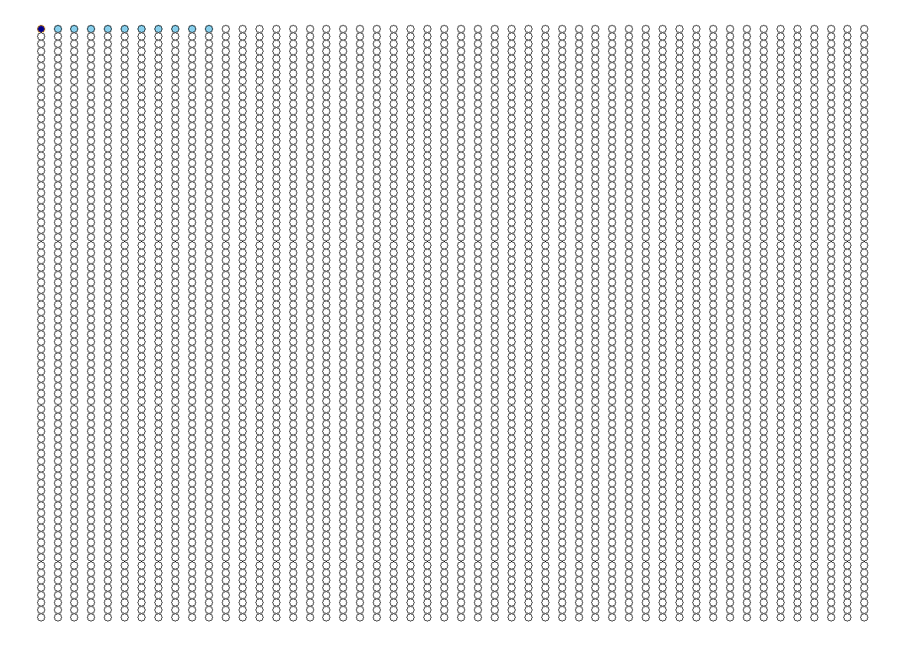
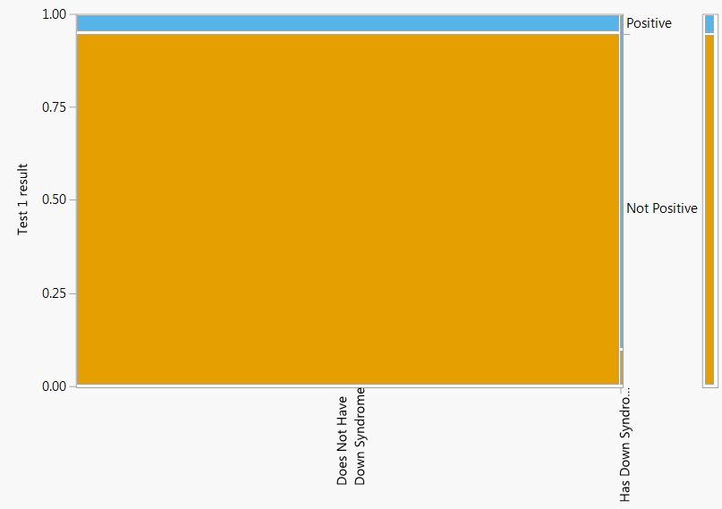
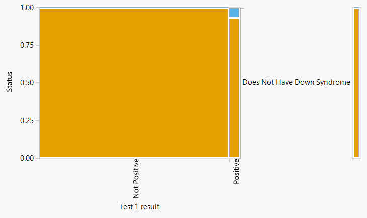
People have a tendency to ignore base rates; you probably did if your original guess in Example 1.16 was 0.7 or 0.9. Don’t neglect the base rates when evaluating probabilities! We will discuss the role that base rates play and how to revise probabilities in light of new information in much more detail later.
We close this section with a brief tangent relating to the discussion in Section 1.2.3. In Example 1.16 there is uncertainty due to the random selection, uncertainty about whether the test will be positive or not, and uncertainty that someone who tests positive actually has the condition. You might consider these three different kinds of randomness, with three different interpretations of corresponding probabilities. For example, you might interpret the probability that a randomly selected person has the condition (0.00025) as a long run relative frequency; however, once the person is selected and tests positive they either have the condition or not—we just don’t know for sure—so you might interpret the probability that they have the condition given a positive test (0.0797) differently. The point is: how we interpret the probabilities does not affect how we solve the problem. The probabilities involved in Example 1.16 “fit together” in the same way regardless of the interpretation; given the context and values 0.00025, 0.9, and 0.0026 we must arrive at 0.0797. Furthermore, to make sense of the value 0.0797 we used both long run relative frequency and relative degrees of likelihood interpretations. We will treat many examples like Example 1.16; we will generally not distinguish between different types of randomness, and we will use interpretations of probability interchangeably.
1.4.1 Exercises
Exercise 1.7 In each of the following, which is greater: (a) or (b)? Or are they equal? Or is there not enough information to decide?
- Surfing
- The probability that a randomly selected Californian likes to surf.
- The probability that a randomly selected American is a Californian who likes to surf
- Cal Poly alums
- The probability that a California resident is a Cal Poly alum.
- The probability that a Cal Poly alum is a California resident
Exercise 1.8 Continuing Example 1.15.
- Is the overall percentage of American adults who have a pet cat closer to the value in part 9 or part 10? Why do you think that is?
- What percentage of American adults who have a pet dog also have a pet cat?
- What percentage of American adults who do not have a pet dog have a pet cat?
Exercise 1.9 Continuing Example 1.15. Now suppose that 11.75% of American adults have both a pet cat and a pet dog (as Donny claimed was necessarily true). Redo Example 1.15 and Exercise 1.8 under this assumption. What is true in this scenario that wasn’t true in Example 1.15?
Exercise 1.10 Suppose that you have applied to two graduate schools, A and B. Your subjective probability of being accepted is 0.6 for school A and 0.7 for school B.
- What is the largest possible probability of being accepted by both schools? Under what scenario (however unrealistic) would this be true? Explain.
- What is the smallest possible probability of being accepted by both schools? Under what scenario (however unrealistic) would this be true? Explain.
- Explain why the probability of being accepted by both schools is not necessarily 0.42.
- For the remaining parts, suppose your subjective probability of being accepted at both schools is 0.55. If you are accepted at school A, what is your probability of also being accepted at school B?
- If you are accepted at school A, what is your probability of not being accepted at school B?
- If you are not accepted at school A, what is your probability of being accepted at school B?
- If you are accepted at school B, what is your probability of also being accepted at school A?
- If you are not accepted at school B, what is your probability of being accepted at school A?
- How much more likely are you to be accepted at school A if you are accepted at school B than if you are not accepted at school B?
- How much more likely are you to be accepted at school A if you are accepted at school B compared to before receiving the decision from school B?
1.5 Conditioning on information
A probability is a measure of the likelihood or degree of uncertainty or plausibility of an event. A “conditional” probability revises this measure to reflect any additional information about the outcome of the underlying random phenomenon. In Example 1.16 the probability that a baby has DiGeorge syndrome is 0.00025, but if the screening returns a positive result then the probability increases to 0.0797. Always look out for words like “if” or “given” which signify information that influences probabilities.
In a sense, all probabilities are conditional upon some information, even if that information is vague (“well, it has to be one of these possibilities”). Be careful to clearly identify what information is reflected in probabilities, and don’t make assumptions. In part 1 of Example 1.17 if we’re randomly selecting a person from 1950 birth records, then we shouldn’t assume that the person is alive today when evaluating the probability in (a); the selected person could have died between 1950 and now. That is, “the probability that a person born in 1950 lives to age 100” is not the same as “the probability that a person born in 1950 who is alive today lives to age 100”. In part 2 of Example 1.17, we shouldn’t assume that Dwayne Johnson actually runs for president in 2032; the value of our probability should reflect that uncertainty. That is, “the probability that Dwayne Johnson wins the 2032 U.S. Presidential Election” is not the same as “the probability that Dwayne Johnson wins the 2032 U.S. Presidential Election given that he declares himself a candidate”.
Be careful to distinguish between conditional and unconditional probabilities. A conditional probability reflects additional information about the outcome of the random phenomenon. In the absence of such information, we must continue to account for all the possibilities. When computing probabilities, be sure to only reflect information that is known. Especially when considering a phenomenon that happens in stages, don’t assume that when considering what happens second that you know what happened first.
In Example 1.18, the question “if Harry is not the first name selected, what is the probability that Harry is the second name selected?” involves a conditional probability, since we are given additional information about the outcome; it is no longer possible that Harry was the first name selected. The question “What is the probability that Harry is the second name selected?” involves an unconditional probability. The words “the probability that Harry is the second name selected” alone do not imply that Harry was not selected first; we still need to account for the possibility that Harry was selected first.
Imagine shuffling the five cards and putting two on a table face down. Now point to one of the cards and ask “what is the probability that THIS card is Harry?” Well, all you know is that this card is one of the five cards, each of the 5 cards is equally likely to be the one you’re pointing to, and only one of the cards is Harry. Should it matter whether the face down card you’re pointing to was the first or second card you laid on the table? No, the probability that THIS card is Harry should be 1/5, regardless of whether you put it down first or second.
Now turn over one other card that you’re not pointing to, and see what name is on it. The probability that the card you’re pointing to is Harry has now changed, because you have some information about the outcome of the shuffle. If the card you turned over says Harry, you know the probability that the card you’re pointing to is Harry is 0. If the card you turned over is not Harry, then you know that the probability that the card you’re pointing to is Harry is 1/4. It is not “first” or “second” that matters; it is whether or not you have obtained additional information by revealing one of the cards.
Another way of asking the question is: Shuffle the five cards; what is the probability that Harry is the second card from the top? Without knowing any information about the result of the shuffle, all you know is that Harry should be equally likely to be in any one of the 5 positions, so the probability that he is the second card from the top should be 1/5. It is only after revealing information about the result of the shuffle, say the top card, that the probability that Harry is in the second position changes.
We often start with a probability for an event and then revise it whenever additional information becomes available. The original, unconditional probability is called a “prior probability” or “base rate”; the revised, conditional probability is called a “posterior probability”. We will discuss the role that base rates play and how to revise probabilities in light of additional information in much more detail later. But remember: Don’t neglect the base rates when evaluating probabilities!
We use the terminology “unconditional” and “conditional” probability, but any probability is conditional on some information. A better way to think about it might just be “before” and “after”. When new information becomes available we revise our probability. The unconditional (prior) probability is the probability before the revision, reflecting any information that was previously available. The conditional (posterior) probability is the probability after the revision, updated to reflect the newly available information. Probabilities are often updated sequentially as more information becomes available, with the conditional (posterior) probability after one piece of information is received becoming the unconditional (prior) probability before the next.
Do not think of “unconditional” as “based on no information”. Any probability should reflect as much relevant information as possible, even if it plays the role of an unconditional probability.
1.5.1 Exercises
Exercise 1.11 In each of the following, which is greater: (a) or (b)? Or are they equal? Or is there not enough information to decide? Answer without doing any computations.
- Shuffle a standard deck of playing cards (52 cards, 4 of which are aces) and deal 5 cards without replacement.
- The probability that the first card dealt is an ace.
- The probability that the firth card dealt is an ace.
- Shuffle a standard deck of playing cards (52 cards, 4 of which are aces) and deal 5 cards without replacement.
- The probability that the first card dealt is an ace.
- The probability that the fifth card dealt is an ace if the first card dealt is an ace.
- Randomly select a college student.
- The probability that the selected student went surfing yesterday.
- The probability that the selected student went surfing yesterday if they student attends Cal Poly.
- Both ballerinas and football players are graceful and nimble. A group of people contains both some ballerinas and some football players. A person is randomly selected from this group; the person is graceful and nimble.
- The probability that the selected person is a ballerina.
- The probability that the selected person is a football player.
1.6 Probability of what?
A probability takes a value in the sliding scale from 0 to 1 (or 0% to 100%). Throughout the book we will study how to compute probabilities in many situations. But don’t just focus on computation. Always remember to interpret probabilities properly. This section covers a few ideas to keep in mind when interpreting probabilities.
Pay close attention to the differences in the two parts in Example 1.21. The first part involves probabilities of the particular outcome sequence. The second part involves more general “events” that the particular outcome sequence might satisfy. The following provides another example of this “particular” versus “general” dichotomy.
When interpreting probabilities, be careful not to confuse “the particular” with “the general”.
“The particular:” A very specific event, surprising or not, often has low probability.
- For a fair coin, observing the particular sequence HHTHTTTHHT in 10 flips is just as likely as observing HHHHHHHHHH.
- The probability that the winning powerball number is 4-8-15-16-42-(23) is exactly the same as the probability that the winning powerball number is 1-2-3-4-5-(6).
- The probability that you get a text from your best friend at 7:43pm two weeks from today inviting you to dinner at your favorite pizza place after you’ve just ordered pizza from there is probably pretty small. None of these items — getting a text, having a friend invite you to dinner, ordering pizza from your favorite pizza place — is unusual, but the chances of them all combining in this way at this particular time are fairly small.
“The general:” While a very specific event often has low probability, if there are many like events their combined probability can be high.
- There are many possible sequences of 10 coin flips which result in 5 heads.
- For almost all of the possible Poweball combinations the numbers are not in order.
- The probability that some time in the next month or so a friend texts a dinner invitation is probably fairly high.
The probability that you win the next Powerball lottery if you purchase a single ticket is about 1 in 300 million. Let’s put this number in perspective. There are about 260 million adults (over age 18) in the U.S.30 Suppose that the name of every adult in the U.S. is written on a 3x5 index card. These 260 million cards stacked would stretch about 62 miles high; that’s commonly referenced as the distance from the earth to where space begins. The stack would also weigh about 400 tons, about as much 4 blue whales. Suppose we shuffle the cards—much easier said than done—and select one. The probability that your name is on the selected card is about 1 in 260 million. The chances that your next Powerball ticket is the winning number are a little less likely than this31.
However, if hundreds of millions of Powerball tickets are sold, the probability that someone somewhere wins is pretty high. For example, if 500 million tickets are sold then there is a roughly 80% chance that at least one ticket has the winning number (under certain assumptions).
Even if an event has extremely small probability, given enough repetitions of the random phenomenon, the probability that the event occurs on at least one of the repetitions is often high32.
Consider the headline of this news article from 2010: “Man mauled by bear after lightning strike”. We certainly feel sorry for this poor man, but just how unlikely is such an occurrence? Let’s look a little closer.
The headline seems to imply that the man got struck by lightning and then, while he was trying to reach safety, a bear attacked. But the mauling occurred four years after the lightning strike. Getting mauled by a bear and struck by lightning within one’s lifetime is certainly much more likely than both happening on the same day.
“Getting struck by lightning” is often colloquially used to describe a rare event, but how unlikely is it? One study estimates that about 250,000 people in the world are struck by lightning each year, and the National Weather Service estimates that the probability that you get struck by lightning within your lifetime is 1/15,000. Still not very likely, but maybe not as rare as you might think.
Getting mauled by a bear is much less likely than being struck by lightning. There are only about 40 bear attacks of humans each year. However, if the headline had been “Man bitten by shark after lightning strike” or “Man attacked by mountain lion after lightning strike” or “Man trampled by moose after lightning strike” it probably would have been equally newsworthy. Thus we should account for all similar animal attacks, not just bear attacks, when assessing the likelihood.
The probability that you get struck by lightning and mauled by a bear today is certainly very small. But the probability that someone somewhere within their lifetime gets both struck by lightning and attacked by an animal is orders of magnitude higher. In general, even though the probability that something very specific happens to you today is often extremely small, the probability that something similar happens to someone some time is often quite high.
When something surprising happens, don’t just consider the probability of that particular outcome. Rather, consider all the other possible outcomes that would have been equally surprising if they had occurred, and consider the probability that at least one of them would happen (which often turns out to be not so small). From this perspective, most coincidences turn out to be much more probable than they seem at first.
When assessing a probability, always ask “probability of what”? Does the probability represent “the particular” or “the general”? Is it the probability that the event happens in a single occurrence of the random phenomenon, or the probability that the event happens at least once in many occurrences? Keep these questions in mind when assessing numerical probabilities. Remember that something that has a “one in a million chance” of happening to you today will happen to about 7000 people in the world every day.
1.6.1 How likely is “likely”?
Consider each of the following statements (presented in no particular order). If you were to assign a numerical value to the probability of rain tomorrow in each case, what would it be?
- It is likely that it will rain tomorrow.
- It is probable that it will rain tomorrow.
- There is little chance that it will rain tomorrow.
- It is highly unlikely that it will rain tomorrow.
- We doubt that it will rain tomorrow.
- There is a very good chance that it will rain tomorrow.
- It is almost certain that it will rain tomorrow.
- It is improbable that it will rain tomorrow.
- It will probably not rain tomorrow.
- It is highly likely that it will rain tomorrow.
- It is almost certain that it will not rain tomorrow.
- It will probably rain tomorrow.
- We believe that it will rain tomorrow.
- There is a better than even chance that it will rain tomorrow.
In a study conducted in the 1960s (Barclay et al. (1977)), twenty-three military officers were asked to provide numerical probabilities for a similar set of statements (“It is almost certain that the Soviets will invade Czechoslovakia”, “It is highly likely that the Soviets will invade Czechoslovakia”, etc.) For most of the statements there was considerable variability in the responses. For example,
- Probabilities assigned to “almost certain” ranged from 0.75 to 0.99.
- Probabilities assigned to “highly likely” ranged from 0.50 to 0.99.
- Probabilities assigned to “likely” ranged from 0.30 to 0.90.
- Probabilities assigned to “probable” ranged from 0.25 to 0.90.
Recent similar studies have produced comparable results that exhibit wide variability in the numerical values people associate with words describing probabilities. Studies like these provide evidence of differences in how people perceive probability.
One way to avoid ambiguity is to provide numerical values of probability rather than just vague words like “likely” or “probable”. However, people can still perceive numbers differently. An event that has a probability of 0.4 is four times more likely than an event with a probability of 0.1, but how likely is either event? Depending on their background, people might interpret a probability of 0.4 differently. Someone familiar with baseball knows that 0.4 would be an extremely high value for the probability that a particular batter successfully gets a hit in at bat, while someone familiar with basketball knows that 0.4 would be extremely low value for the probability that a particular player successfully scores on a free throw attempt. An audience that routinely encounters probabilities close to 0 will perceive a probability of 0.4 differently than one that commonly deals with probabilities around 0.5. When reporting probabilities, it is helpful to provide some benchmarks from a context more familiar to the audience to provide a sense of scale33.
For example, for people from California you might provide benchmarks based on county populations. If you randomly select a single California resident (about 39 million people) there is, roughly, a
- 25% chance they are from Los Angeles County (about 9.7 million people)
- 8% chance they are from Orange County (about 3.2 million people)
- 0.7% chance they are from San Luis Obispo County (about 300 thousand people)
- 0.1% chance they are from Calaveras County (about 46 thousand people)
Providing a few values in this manner can help the audience gauge the magnitude of a probability like 0.2 or 0.0134.
Be sure to keep in mind “the particular versus the general”. When reporting the value of a probability, provide enough contextual detail so that the audience can distinguish “the particular from the general”. If the probability of interest represents “the particular”, then provide benchmarks in terms of “the particular”; likewise for “the general”. In the California county example, we could use the values provided for a single randomly selected resident to benchmark “particular” probabilities (what is the probability this happens to me?). For “general” probabilities we could revise in terms like “if we randomly select 100 CA residents, there is a 50% chance that at least one resident is from San Luis Obispo County”.
So how likely is “likely”? We hope you see that there is no clear answer to this question. When communicating probabilities, our best advice is to:
- Report numerical values instead of ambiguous words.
- Provide enough contextual detail to identify “probability of what?”. In particular, be careful to distinguish “the particular from the general”.
- Provide the value of a few helpful benchmark probabilities in a familiar context to provide a sense of scale.
- Remember that despite your best efforts, people might still perceive probabilities differently.
1.6.2 Exercises
Exercise 1.12 Create your own analogy for how unlikely that a single ticket wins the Powerball lottery. How would you describe a 1 in 300 million chance?
Exercise 1.13 In each of the following, which is greater: (a) or (b)? Or are they equal? Or is there not enough information to decide?
- Election interference
- The probability that Russian agents successfully interfere with the 2024 U.S. Presidential election through posts on Facebook with the goal of helping the Republican candidate get elected.
- The probability that non-U.S. actors attempt to interfere with the 2024 U.S Presidential election.
- Roll a six-sided die which is known to be fair 10 times.
- The probability that the results are, in order, 1223334444.
- The probability that the results are, in order, 4614253226.
- Roll a six-sided die which is known to be fair 10 times.
- The probability that the results are, in order, 1234561234.
- The probability that you roll each of the six faces at least once.
Exercise 1.14 Search online to find some benchmark probabilities (e.g., 0.25, 0.1, 0.01, 0.001, 0.0001, etc.) in a context that is interesting and familiar to you.
1.7 “Expected” value
We are often interested in numerical values associated with a random phenomenon. If we flip a coin 100 times we might be interested in the number of flips which land on heads or the longest streak of heads. Forecasting tomorrow’s weather, we might be interested in the high temperature or amount of precipitation. Predicting the next Superbowl, we might be interested in the total number of points scored or the margin of victory.
When dealing with uncertain numerical quantities, we often ask: what value do we expect? In this section we’ll introduce how we might answer this question. We’ll also give a first warning to be careful about what we mean by “expected” values.
A single policy either results in a positive profit for the insurance company or not. For a group of policies we can compute the relative frequency of a positive profit: count the number of policies with a positive profit and divide by the total number of policies. The probability that a policy results in a positive profit can be interpreted as a long run relative frequency over many policies.
But there is more to the profit on a policy than whether it is positive or not; we are also interested in the amount of profit. For a group of policies we can compute the average profit: add up the values of the profits and divide by the total number of policies. The long run average value over many policies is called the “expected value” of profit.
Be careful: the term “expected value” is somewhat of a misnomer. The expected value is not necessarily the value we expect on a single repetition of the random phenomenon. In Example 1.24 the expected value of profit is $220, but it is not possible for a single policy to have a profit of $220. Rather, $220 is the average profit per policy we expect to see in the long run over many policies. A probability can be interpreted as a long run relative frequency; an expected value can be interpreted as a long run average value.
The previous example illustrates that the long run average value is also the probability-weighted average value. That is, we multiplied each possible value by its corresponding probability and then summed. Interpreting an expected value as a probability-weighted average value might be more natural in situations involving subjective probabilities.
We will see other interpretations of expected values later. In particular, we will see in what sense an expected value can be interpreted as a “best guess” of an uncertain random quantity.
Returning to Example 1.24, the insurance company’s profit is the policyholder’s loss. Most policyholders pay the $1000 premium and incur no damage. Furthermore, the expected value of the loss for a policyholder is $220. Why are people willing to buy insurance despite this? Individuals live in the short run; any individual is either going to incur damage or not. Insurance is protection against the risk of a large loss. Even though the probability of occurrence is small, incurring a large amount of damage like $50000 would have serious financial consequences for most individuals. Many people are willing to trade a sure but relatively small monetary loss like $1000 to protect against an unlikely but serious loss like $50000.
On the other hand, insurance companies operate in the long run. Over many policies, an insurance company is virtually guaranteed an average profit of $220 per policy. The insurance company will lose, and lose big, on some policies. But these losses are more than offset in the long run by the relatively small profits on the large number of policies that incur no damage.
1.7.1 Exercises
Exercise 1.15 A roulette wheel has 18 black spaces, 18 red spaces, and 2 green spaces, all the same size and each with a different number on it. Suppose you bet $1 on black. If the wheel lands on black, you win your initial bet back plus an additional $1; otherwise you lose the money you bet. That is, your net winnings are either +1 or -1 dollar.
- Compute the probability-weighted average value of your net winnings.
- Is the value in the previous part the net winnings you would expect on a single bet?
- Explain in what sense the value from the first part is “expected”.
Exercise 1.16 A roulette wheel has 18 black spaces, 18 red spaces, and 2 green spaces, all the same size and each with a different number on it. Suppose you bet $1 on 7. If the wheel lands on 7, you win your initial bet back plus an additional $35; otherwise you lose the money you bet. That is, your net winnings are either +35 or -1 dollar.
- Compute the probability-weighted average value of your net winnings.
- Is the value in the previous part the net winnings you would expect on a single bet?
- Explain in what sense the value from the first part is “expected”.
Exercise 1.17 Compare Exercise 1.15 and Exercise 1.16. Are the two $1 bets — bet on black versus bet on 7 — identical? In what way are these betters the same? In what ways are they different?
1.8 A brief introduction to simulation
Here’s a seemingly simple problem. Flip a fair coin four times and record the results in order. For the recorded sequence, compute the proportion of the flips which immediately follow a H that result in H. What value do you expect for this proportion? (If there are no flips which immediately follow a H, i.e. the outcome is either TTTT or TTTH, discard the sequence and try again with four more flips.)
For example, the sequence HHTT means the first and second flips are heads and the third and fourth flips are tails. For this sequence there are two flips which immediately followed heads, the second and the third, of which one (the second) was heads. So the proportion in question for this sequence is 1/2.
So what value do you expect for this proportion? We think it’s safe to say that most people would answer 1/2. After all, it shouldn’t matter if a flip follows heads or not, right? We would expect half of the flips to land on heads regardless of whether the flip follows H, right? We’ll see there are some subtleties lurking behind these questions.
To get an idea of what we would expect for this proportion, we could conduct a simulation: flip a coin 4 times and see what happens. Table 1.4 displays the results of a few repetitions; each repetition consists of an ordered sequence of 4 coin flips for which the proportion in question is measured. (Flips which immediately follow H are in bold.)
| Repetition | Outcome | Flips that follow H | H that follow H | Proportion of H followed by H |
|---|---|---|---|---|
| 1 | HHTT | 2 | 1 | 0.5 |
| 2 | HTTH | 1 | 0 | 0 |
| discarded | TTTH | 0 | NA | try again |
| 3 | HTHT | 2 | 0 | 0 |
| 4 | THHH | 2 | 2 | 1 |
| 5 | HHTT | 2 | 1 | 0.5 |
| 6 | HHHT | 3 | 2 | 0.667 |
| 7 | HTTH | 1 | 0 | 0 |
| 8 | THHT | 2 | 1 | 0.5 |
| 9 | THTT | 1 | 0 | 0 |
| 10 | HHHH | 3 | 3 | 1 |
Table 1.5 and Figure 1.12 summarize the results of these 10 repetitions of the simulation.
| Proportion of H following H | Frequency | Relative frequency |
|---|---|---|
| 0.0000 | 4 | 0.4 |
| 0.5000 | 3 | 0.3 |
| 0.6667 | 1 | 0.1 |
| 1.0000 | 2 | 0.2 |
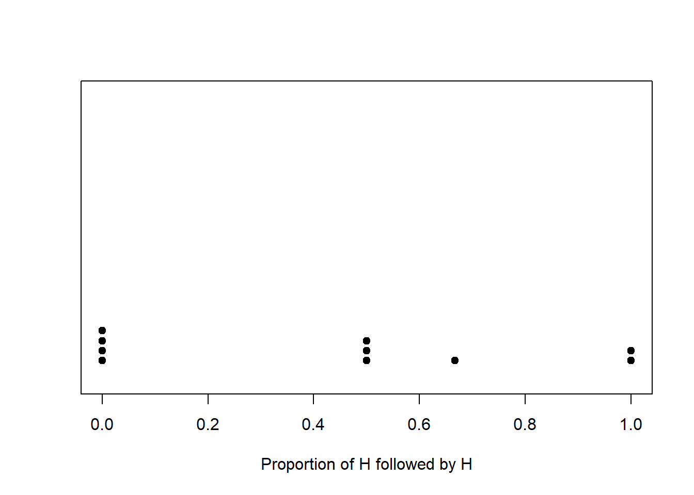
We can keep repeating the above process to investigate what happens in the long run. Rather than actually flipping coins, we use a computer to run a simulation. Figure 1.13 summarizes the results of 1,000,000 successful repetitions of the simulation, after discarding the sequences with no flips following H. (We will see how to program, run, and summarize simulations like this in later chapters.) While you can’t see the individual “dots” like in Figure 1.12 each dot would represent a sequence of 4 coin flips (with at least one flip following a H) and the value being plotted is the proportion of H followed by H for that sequence. The results would look like those in Table 1.4, albeit a table with 1,000,000 rows (after discarding rows with no flips immediately following H.)
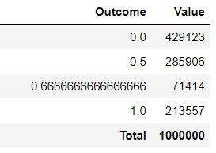
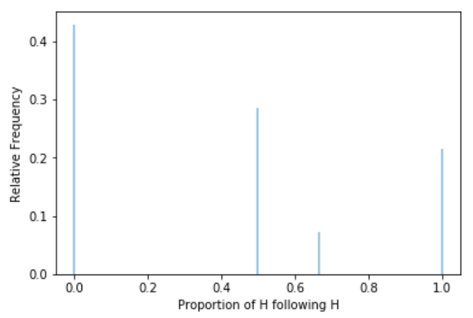
We asked the question: what would you expect for the proportion of the flips which immediately follow a H that result in H? That depends on how we define what’s “expected”. If we are interested in the value that is most likely to occur when we flip a coin four times, then the answer is 0: we see that in the long run a little over 40% of the sets resulted in a proportion of 0, while only about 30% of sets resulted in a value of 1/2. We see that Figure 1.13 (b) is not centered at 1/2; a higher percentage of repetitions resulted in a proportion below 1/2 than above 1/2. We think that most people would find this surprising.
Another way to interpret “expected” is as “average”; in particular, expected value can be interpreted as the long run average value. After 1,000,000 repetitions, each involving a set of four fair coin flips, we have 1,000,000 simulated values of the proportion of H following H. We could then average these values: add up all the values and divide by 1,000,000.
\[ {\scriptscriptstyle \frac{0\times 429123 + (1/2)\times 285906 + (2/3) \times 71414 + 1 \times 213557}{1000000} = 0.404 } \]
It turns out that the long run average value is 0.405, which is not 1/2. Again, we think most people find this surprising.
A reminder: the term “expected value” is somewhat of a misnomer. We are not saying that if we flip a coin four times we would expect the proportion of H following H for that set of flips to be 0.405. In fact, in any single set of four fair coin flips the only possible values for the proportion of H followed by H are 0, 1/2, 2/3, and 1. So in a set of four coin flips it’s not possible to see a proportion of 0.405. Rather, 0.405 is the average value of the proportion of H followed by H that we would expect to see in the long run over many sets of four fair coin flips.
The simulation provides evidence that, counter to our intuition, we would expect the proportion of H followed by H to be less than 0.5. So what is happening here? We will return to this example several times to investigate these results more closely. We’ll leave it as a mystery for now, but observe that:
- The study of probability can involve some subtleties and our intuition isn’t always right.
- Simulation is an effective way of investigating probability problems, and can reveal interesting and surprising patterns.
- There is a difference between (1) the probability that a flip following H lands on H and (2) the proportion of flips following H which result in H in a fixed sequence of fair coin flips35.
- In a fixed number of fair coin flips, the proportion of flips following H which result in H is “expected” to be less than the true probability of H, even though the trials are independent.
1.8.1 Exercises
Exercise 1.18 In a group of \(n\) people, what is the probability that at least two people in the group people have the same birthday?
- Consider \(n=30\): what do you think the probability that at least two people in a group of 30 people share a birthday is: 0-20%, 20-40%, 40-60%, 60-80%, 80-100%?
- How large do you think \(n\) needs to be in order for the probability that at least two people share a birthday to be larger than 0.5?
- We’ll save the answer to these questions for later, but they turn out to be unintuitive to many people, and simulation can shed some light. Explain how, in principle, you might perform a simulation using cards or slips of paper to estimate the probability that at least two people have the same birthday when \(n=30\). You can make some simplifying assumptions: Ignore multiple births and February 29 and assume that the other 365 days are all equally likely36.
1.9 Why study coins, dice, cards, and spinners?
Many probability problems involve “toy” situations like flipping coins, rolling dice, shuffling cards, or spinning spinners. These situations might seem unexciting, or at least not very practically meaningful. However, coins and spinners and the like provide familiar, concrete situations which facilitate understanding of probability concepts. Furthermore, simple situations often provide insight into real and complex problems. The following is just one illustration.
Many basketball players and fans alike believe in the “hot hand” phenomenon: the idea that making several shots in a row increases a player’s chances of making the next shot. However, the consensus conclusion of thirty years of studies on the hot hand, beginning with the seminal study Gilovich, Vallone, and Tversky (1985), had been that there is no statistical evidence that the hot hand in basketball is real. As a result, many statisticians regularly caution against the “hot hand fallacy”: the belief that the hot hand exists when, in reality, the degree of streaky behavior typically observed in sequential data is consistent with what would be expected simply by chance in independent trials.
The idea behind studies like Gilovich, Vallone, and Tversky (1985) is essentially the following. Consider a player who attempts 100 shots and makes 50%. If there is no hot hand, then we might expect the player to make 50% of shots both on attempts that follow hit streaks— usually considered three (or more) made attempts in a row—and on other attempts. Therefore, a success rate of 50% on both sets of attempts provides no evidence of the hot hand.
However, recent research of Miller and Sanjurjo (2018a), Miller and Sanjurjo (2018c), Miller and Sanjurjo (2018b) concludes that previous studies on the hot hand in basketball, starting with Gilovich, Vallone, and Tversky (1985), have been subject to a bias. After correcting for the bias, the authors find evidence in favor of the hot hand effect in basketball shooting, suggesting the hot hand fallacy is not a fallacy after all. One interesting aspect of these studies is that Miller and Sanjurjo’s methods are simulation-based.
Miller and Sanjurjo (2018a) introduced the coin flipping problem in Section Section 1.8) to illustrate the idea behind their research and the bias in previous studies. Consider again a player who attempts 100 shots and makes 50%. Even if there is no hot hand, Miller and Sanjurjo show that we would actually expect the player to have a shooting percentage of strictly less than 50% on the attempts which followed streaks, and strictly greater than 50% on the other attempts. The reason is similar to what we observed in the the coin flipping problem in Section 1.8: in a fixed number of trials, the proportion of H on trials following H is expected to be less than the true probability of H, even though the trials are independent. Therefore, for the example player a success rate of 50% on both sets of attempts actually provides directional evidence in favor of the hot hand. Properly acccounting for this bias leads to substantially different statistical analyses (i.e., p-values) and conclusions.
1.9.1 Exercises
Exercise 1.19 Find the value of some probability in a real world situation of interest to you. Then describe how this situation could be modeled with coins, dice, cards, or spinners. How would you use your “toys” to simulate the situation and approximate the probability of interest?
1.10 Chapter exercises
Exercise 1.20 True or false.
- Probability can be used to assess the likelihood or plausibility of an event associated with a phenomenon that only happens once.
- Probability can be used to assess the likelihood of an event associated with a phenomenon that happended in the past.
- The subjective and long run relative frequency interpretations of probability can be used interchangeably.
- Suppose the probability that a randomly selected CP student has an internship this summer is 0.2, and the probability that a randomly selected CP student is taking at least one course this summer is 0.4. True false: the probability that a randomly selected CP student either has an internship or is taking at least one class (or both) must be 0.6.
- Suppose the probability that a randomly selected CP student has an internship this summer is 0.2, and the probability that a randomly selected CP student is taking at least one course this summer is 0.4. True false: the probability that a randomly selected CP student both has an internship and is taking at least one class must be 0.08.
Exercise 1.21 Short answer.
- Your subjective probability that the price of regular unleaded gasoline at your favorite gas station in SLO stays above $5 per gallon throughout the next month is 0.95. How many times more likely than not is it for the price to stay above $5 per gallon through the next month?
- It is 3 times more likely than not that the high temperature tomorrow will be greater than 80 degrees F. What is the probability that the high temperature tomorrow will be greater than 80 degrees F?
- Laszlo, Nadja, and Nandor are having a tournament. Guillermo thinks that Nandor is 3.5 times more likely to win than Nadja, and Nadja is 2 times more likely to win than Lazlso. Find Guillermo’s probability that Nandor wins.
Exercise 1.22 In each of the following, which of a or b is strictly greater? Or are they equal? Or is there not enough information to decide? Explain your reasoning.
Surfing Californians
- The probability that a randomly selected Californian likes to surf
- The probability that a randomly selected American is a Californian who likes to surf
- a and b are necessarily equal
- There is not enough information provided to decide whether a or b is strictly greater
Cal Poly graduates
- The probability that a randomly selected Cal Poly graduate is a California resident
- The probability that a randomly selected California resident is a Cal Poly graduate
- a and b are necessarily equal
- There is not enough information provided to decide whether a or b is strictly greater
Flips a coin which is known to be fair six times and record the results in sequence
- The probability that the first five flips are, in order, HHHHH
- The probability that the first six flips are, in order, HTTHTH
- a and b are necessarily equal
- There is not enough information provided to decide whether a or b is strictly greater
I catch my child hiding in the bathroom washing chocolate off her face. I ask what her what she’s doing, and she says she just had to go the bathroom.
- The probability that my child just went to the bathroom.
- The probability that my child just went to the bathroom and has secretly been eating chocolate cake.
- a and b are necessarily equal
- There is not enough information provided to decide whether a or b is strictly greater
Among American workers, 40% have a college degree and 10% belong to a labor union.
- 4%
- The percentage of American workers who have a college degree and belong to a labor union.
- a and b are necessarily equal
- There is not enough information provided to decide whether a or b is strictly greater
Exercise 1.23 Suppose
- 85% of people have a dominant right hand.
- 75% of people with a dominant right hand have a dominant right eye.
- 55% of people who do not have a dominant right hand have a dominant right eye.
- What percent of people with a dominant eye have a dominant right hand?
- What percent of people with a dominant right eye do not have a dominant right hand?
- What percent of people without a dominant right eye have a dominant right hand?
- What percent of people with a dominant right hand have a dominant right eye?
- What percent of people have a dominant right eye and a dominant right hand?
The Grand Duke of Tuscany posed this problem to Galileo, who published his solution in 1620. However, unbeknownst to Galileo, the same problem had been solved almost 100 years earlier by Gerolamo Cardano, one of the first mathematicians to study probability (David 1955).↩︎
Or maybe not. We are considering heads and tails as the only outcomes, but what about a coin landing on its edge? It can happen, but the probability is very small; Murray and Teare (1993) estimates the probability that a U.S. nickel lands on its edge to be about 0.000167. Furthermore, there is evidence (Diaconis, Holmes, and Montgomery (2007), Aldous (2023), Bartoš et al. (2024)) that a coin is slightly more likely to land the same way it started. That is, if the coin starts facing heads up, the probability that it lands facing heads up is slightly greater than 0.5, but the difference is small. Quoting Section 7 of Diaconis, Holmes, and Montgomery (2007): “The classical assumptions of independence with probability 1/2 are pretty solid.” We hope you agree that assuming two equally likely outcomes is reasonable for practical purposes.↩︎
We do not advocate gambling. We merely use gambling contexts to motivate probability concepts.↩︎
There is a vast literature on how people make decisions when faced with uncertainty. Kahneman (2012) provides an excellent introduction.↩︎
For example, we are not distinguishing between “aleatoric variability” and “epistemic uncertainty”.↩︎
This is the first of many spinners in this book. Our purpose in using spinners is not to advocate pie charts for summarizing data. Rather, we think spinners provide a concrete representation of probability distributions that helps facilitate understanding of difficult concepts.↩︎
We can also solve this problem using algebra. Let \(x\) be the probability, as a decimal, that the Astros are the winner. (Again, it doesn’t matter which team is the baseline.) Then \(x\) is also the probability that the Dodgers are the winner, \(1.5x\) for the Rays, and \(3x\) for the Braves. The probability that one of the four teams wins is \(x + x + 1.5x + 3x = 6.5x\), so the probability of Other is also \(6.5x\). The probabilities in decimal form must sum to 1, so \(1 = x + x + 1.5x + 3x + 6.5x = 13x\). Solve for \(x=1/13\) and then plug in \(x=1/13\) to find the other probabilities; e.g., \(3x = 3(1/13) = 0.231\) for the Braves.↩︎
This example is inspired by the famous “Linda problem” of Tversky and Kahneman (1982) which they used to illustrate the “conjunction fallacy”.↩︎
You could also solve this with algebra. Let \(x\) be the probability that the Giants win, so \(19x\) is the probability that they don’t win. The probabilities must sum to 1, so set \(x + 19x = 1\) and solve for \(x\).↩︎
Technically, Ron and Leslie could still have different subjective probabilities. Leslie would not agree to worse odds, but she would accept better if Ron offered them. For example, given a potential loss of $200, Leslie would also agree to a potential payout from Ron of $125 rather than $100. That is, Leslie would accept odds of 1.6 to 1 against (\(200/125 = 1.6\)), corresponding to a subjective probability of \(1/(1 + 1.6) = 0.385\). So Leslie’s subjective probability that Professor Ross has a TikTok account is at least 1/3. Similarly, Ron’s subjective probability that Professor Ross has a TikTok account is at most 1/3.↩︎
Technically this is only true if the moneyline odds are positive, which is the case when the probability of winning the bet is less than 0.5. Negative moneyline odds, which occur when the probability of winning the bet is greater than 0.5, represent how much money must be wagered in order to receive a net profit of $100. For example, moneyline odds of -900 indicate that you must bet $900 to receive $1000, for a net profit of 1000-900 = 100. A bet at -900 moneyline odds results in a profit of $100 if the bet is won or a loss of the initial $900 stake otherwise; the amounts 900 and 100 are in a 9 to 1 ratio (in favor of winning), implying a probability of \(9/(1+9) = 0.90\) of winning the bet.↩︎
We’re assuming Donny’s probability that the Dodgers don’t win is 50%. But if Donny’s probabilities don’t add to 100% why would we expect him to obey other consistency requirements? A fair question, but the point is that bad things can happen even if just one of the consistency requirements is violated. If we assume instead 35% as Donny’s probability that the Dodgers don’t win, we can construct a scenario similar to the one in this solution which guarantees us a sure profit with no risk.↩︎
“Book” in the sense of a bookie taking bets, as opposed to a Dutch-language novel like De ontdekking van de hemel.↩︎
These values are based on a study by the Pew Research Foundation conducted in January 2020.↩︎
These values are based on surveys by Gallup, but the values change somewhat over time.↩︎
Careful: we are only claiming that the total does not matter when constructing hypothetical tables. When collecting real data, the sample size matters a great deal. For example, a random sample of 1000 Americans provides a more precise estimate of the population proportion of all Americans who support free tuition than a sample of 100 Americans does. The Pew Research study was based on a random sample of over 12000 Americans.↩︎
You can only run into problems if you round. Suppose we had started with a group size of 100. Then the top left cell in the table would have been 26.56. If we had rounded this to 27, our answers would change. So when dealing with a hypothetical table of counts, don’t round. If you are uncomfortable with decimal counts, just add a few zeros to your total count and try again↩︎
This example is adapted from an article by Allan Rossman.↩︎
The values in this example are based on a Washington Post article which uses data from the 2018 General Social Survey. An earlier Washington Post article discusses discrepancies in estimates of pet ownership.↩︎
These values come from the NY Times article and a related study.↩︎
This is called the sensivity of the test.↩︎
We are treating “not positive” as “negative” but in practice there could also be inconclusive tests.↩︎
DiGeorge syndrome isn’t the greatest example since most cases result from a purely random deletion on chromosome 22. However, DiGeorge syndrome can be inherited from a parent who has it.↩︎
This is called the specificity of the test↩︎
Pregnancy tests are included as part of health screenings for other reasons, but most women who take home pregnancy tests do so for pregnancy related reasons.↩︎
And both equal to \(\left(\frac{1}{2}\right)^{10} =\frac{1}{1024}\)↩︎
252 out of 1024 possibilities in fact↩︎
The exact count is 292,201,338. We will see how to compute this number later.↩︎
Source: U.S. Census Bureau.↩︎
The statistician Ron Wasserstein has provided several fanciful perspectives on the likelihood of winning the Powerball lottery.↩︎
For an interesting investigation of this idea check out the Infinite Monkey Theorem Experiment at the site The Pudding.↩︎
This idea was inspired by Randall Munroe.↩︎
For probabilities closer to 1, we could report the chances of not being from these counties.↩︎
The probability that a flip following H lands on H is 0.5. This example shows that the proportion of flips following H which result in H in a fixed sequence of coin flips is a “biased estimator” of the probability that a flip following H lands on H.↩︎